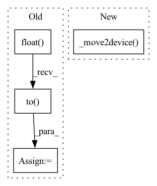

Pattern ID :40137

Before Change
def _process_one_batch3(self, dataset_object, batch):
batch_x, batch_x_temporal, batch_x_spatial, batch_y = batch
batch_x = batch_x.float().to(self.device)
batch_x_temporal = batch_x_temporal.to(self.device)
batch_x_spatial = batch_x_spatial.to(self.device)
batch_y = batch_y.float()
After Change
return outputs, batch_y
def _process_one_batch3(self, dataset_object, batch):
batch_x, batch_x_temporal, batch_x_spatial, batch_y = self._move2device(batch)
// encoder - decoder
if self.args.use_amp:
with torch.cuda.amp.autocast():
if self.args.output_hidden:
In pattern: SUPERPATTERN
Frequency: 3
Non-data size: 4
Instances
Fragment ID: 114078732
Project Name: hyliush/deep-time-series
Commit Name: 1be19919d4ce0ef2a783b63767849dccce0303a9
Time: 2022-03-20
Author: 49185490+hyliush@users.noreply.github.com
File Name: exp/exp_main.py
M Class Name: AnonimousClass
N Class Name: AnonimousClass
M Method Name: _process_one_batch3(3)
N Method Name: _process_one_batch3(3)
M Parent Class:
N Parent Class:
M File Name: exp/exp_main.py
N File Name: exp/exp_main.py
M Start Line: 130
M End Line: 134
N Start Line: 124
N End Line: 124
'>
Before Change
batch_x = batch_x.float().to(self.device)
batch_y = batch_y.float().to(self.device)
batch_x_mark = batch_x_mark.float().to(self.device)
batch_y_mark = batch_y_mark.float().to(self.device)
// encoder - decoder
if self.args.use_amp:
After Change
def _process_one_batch5(self, dataset_object, batch):
batch_x, batch_y, batch_x_mark, batch_y_mark = self._move2device(batch)
// encoder - decoder
if self.args.use_amp:
with torch.cuda.amp.autocast():
if self.args.output_hidden:
'>
Fragment ID: 114078733
Project Name: hyliush/deep-time-series
Commit Name: 1be19919d4ce0ef2a783b63767849dccce0303a9
Time: 2022-03-20
Author: 49185490+hyliush@users.noreply.github.com
File Name: exp/exp_main.py
M Class Name: AnonimousClass
N Class Name: AnonimousClass
M Method Name: _process_one_batch5(3)
N Method Name: _process_one_batch5(3)
M Parent Class:
N Parent Class:
M File Name: exp/exp_main.py
N File Name: exp/exp_main.py
M Start Line: 179
M End Line: 184
N Start Line: 168
N End Line: 168
'>
Before Change
batch_x = batch_x.float().to(self.device)
batch_y = batch_y.float()
batch_x_mark = batch_x_mark.float().to(self.device)
batch_y_mark = batch_y_mark.float().to(self.device)
// decoder input
if self.args.padding==0: // batch_size * (label_len + pred_len) * out_size pred部分被padding
After Change
return outputs, batch_y
def _process_one_batch2(self, dataset_object, batch):
batch_x, batch_y, batch_x_mark, batch_y_mark = self._move2device(batch)
// decoder input
if self.args.padding==0: // batch_size * (label_len + pred_len) * out_size pred部分被padding
dec_inp = torch.zeros([batch_y.shape[0], self.args.pred_len, batch_y.shape[-1]]).float()
'>
Fragment ID: 114078734
Project Name: hyliush/deep-time-series
Commit Name: 1be19919d4ce0ef2a783b63767849dccce0303a9
Time: 2022-03-20
Author: 49185490+hyliush@users.noreply.github.com
File Name: exp/exp_main.py
M Class Name: AnonimousClass
N Class Name: AnonimousClass
M Method Name: _process_one_batch2(3)
N Method Name: _process_one_batch2(3)
M Parent Class:
N Parent Class:
M File Name: exp/exp_main.py
N File Name: exp/exp_main.py
M Start Line: 97
M End Line: 102
N Start Line: 96
N End Line: 96